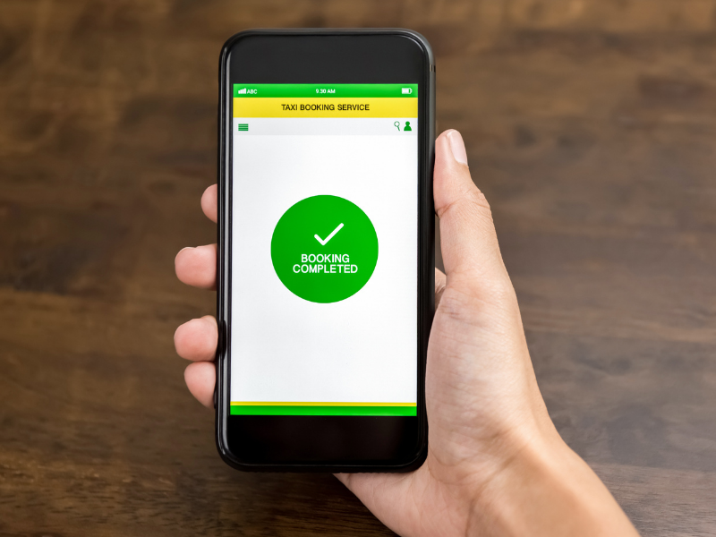
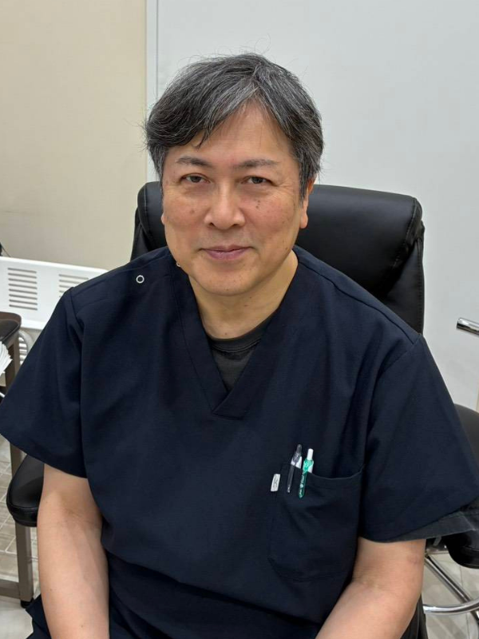

06-6777-9622FAX 06-6777-9632
24時間WEB予約
SAKURANOKI CLINIC
さくらの樹クリニックは内科・外科の外来診療とあわせて、
訪問診療・往診による在宅医療にも力を入れています。
| 時間 | 月 | 火 | 水 | 木 | 金 |
|---|---|---|---|---|---|
| 9:00〜12:00 | 内科・外科院長● | 休診休 | 内科・外科院長● | 内科・循環器内科非常勤医師◇ | 内科・外科院長● |
● 内科・外科(院長)
◇ 内科・循環器内科(非常勤医師)
休診日:火曜日・土曜日・日曜日・祝日 / 受付開始8:50〜
診療時間・アクセスの詳細はこちらMEDICAL INFORMATION
5 REASONS TO BE CHOSEN
※以下5項目はすべて【仮】の内容です。実際の特徴に差し替えてください。
Feature 01
通院での診療はもちろん、通院が難しくなった際も訪問診療・往診で継続してサポートします。(仮テキスト)
Feature 02
近隣の病院・診療所と連携し、必要に応じて適切な医療機関をご紹介します。(仮テキスト)
Feature 03
内科・外科を中心に、幅広い年代の患者さまに寄り添った診療を行います。(仮テキスト)
Feature 04
寝たきりの方やご高齢の方など、通院が困難な場合もご自宅での診療が可能です。(仮テキスト)

Feature 05
WEB予約やお電話でのご予約に対応し、駅・バス停からもアクセスしやすい立地です。(仮テキスト)
SYMPTOM
疾患・病名
症状・お悩み

GREETING
大阪市平野区にあります「さくらの樹クリニック」では、内科の外来はもちろん、在宅医療(訪問診療と往診)にも力を入れております。
また、病診連携・診診連携も積極的に行い、高度な検査や入院が必要になった場合は専門の病医院をご紹介し、専門外の疾患については他院に紹介依頼をいたします。
身近なかかりつけ医として、クリニックでの診療・在宅医療とさまざまな形で患者さまをサポートしてまいります。
院長 福原 龍太郎
ごあいさつを詳しく見るHOME VISIT AREA
さくらの樹クリニックでは在宅医療にも力を入れています。
平野区を中心に、大阪市・八尾市・松原市・東大阪市など、当院から半径16km以内は訪問可能です。どうぞお気軽にご相談ください。
※在宅医療対応エリアの範囲は厚生局の定めによるものです。
COOPERATING HOSPITALS
他にも多数の医療機関と連携しています